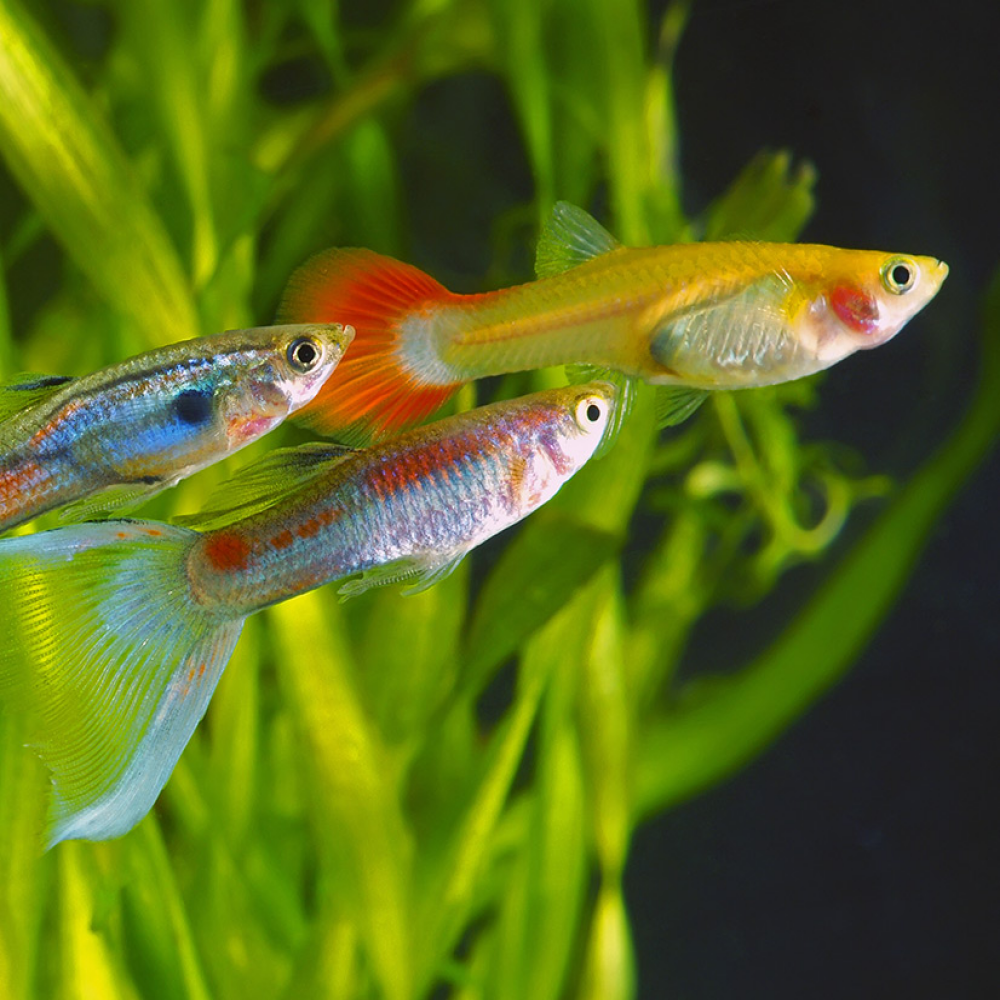
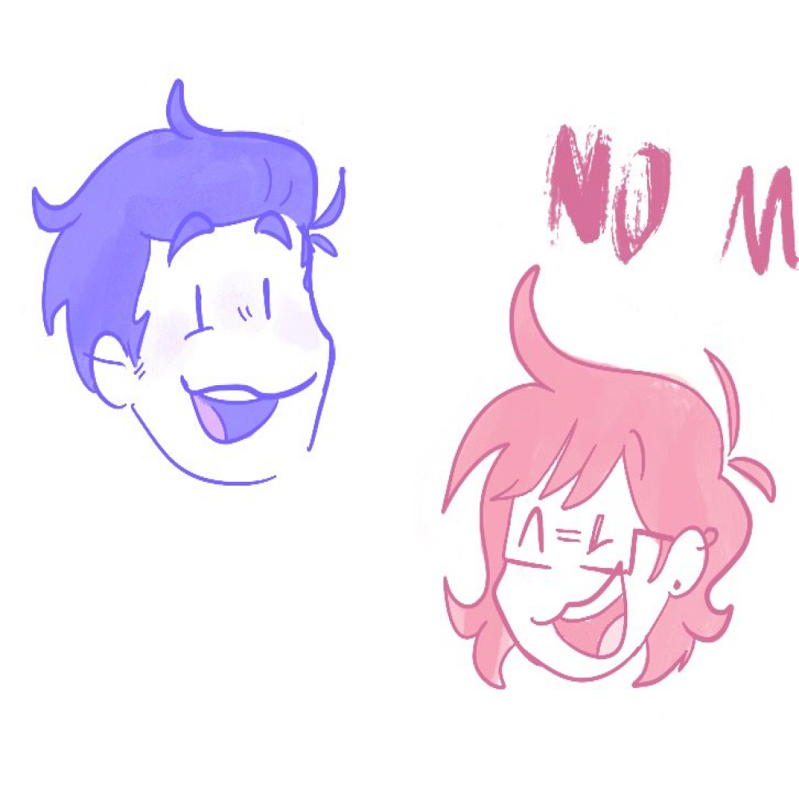
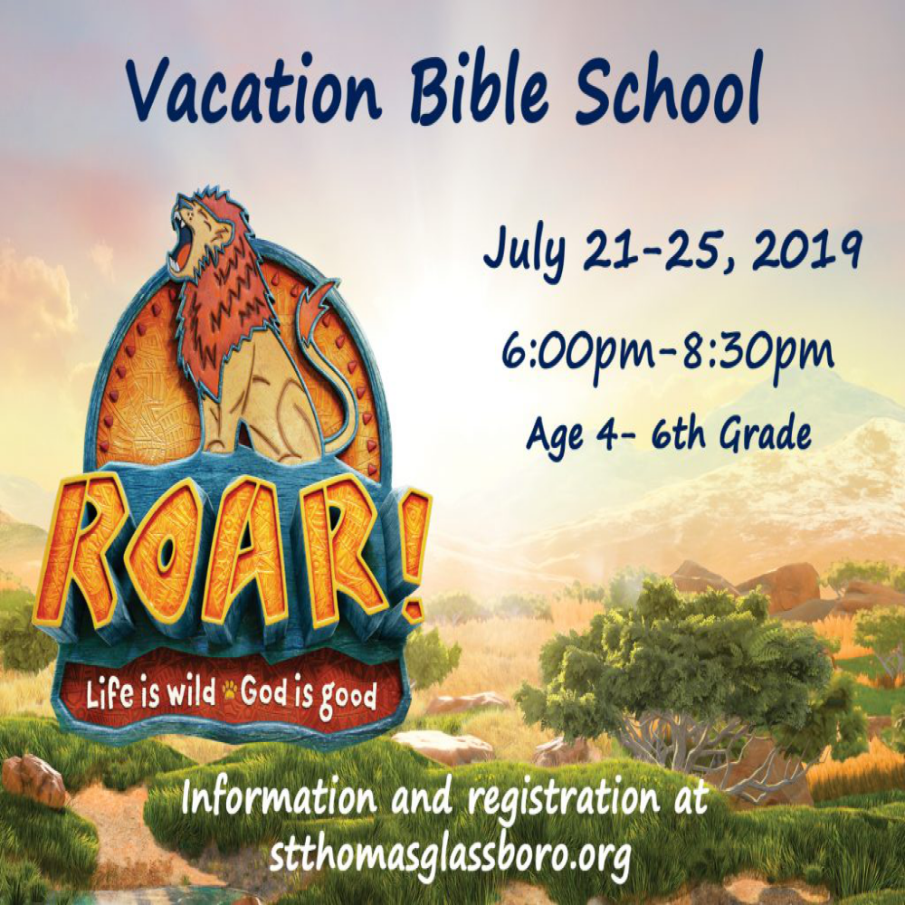
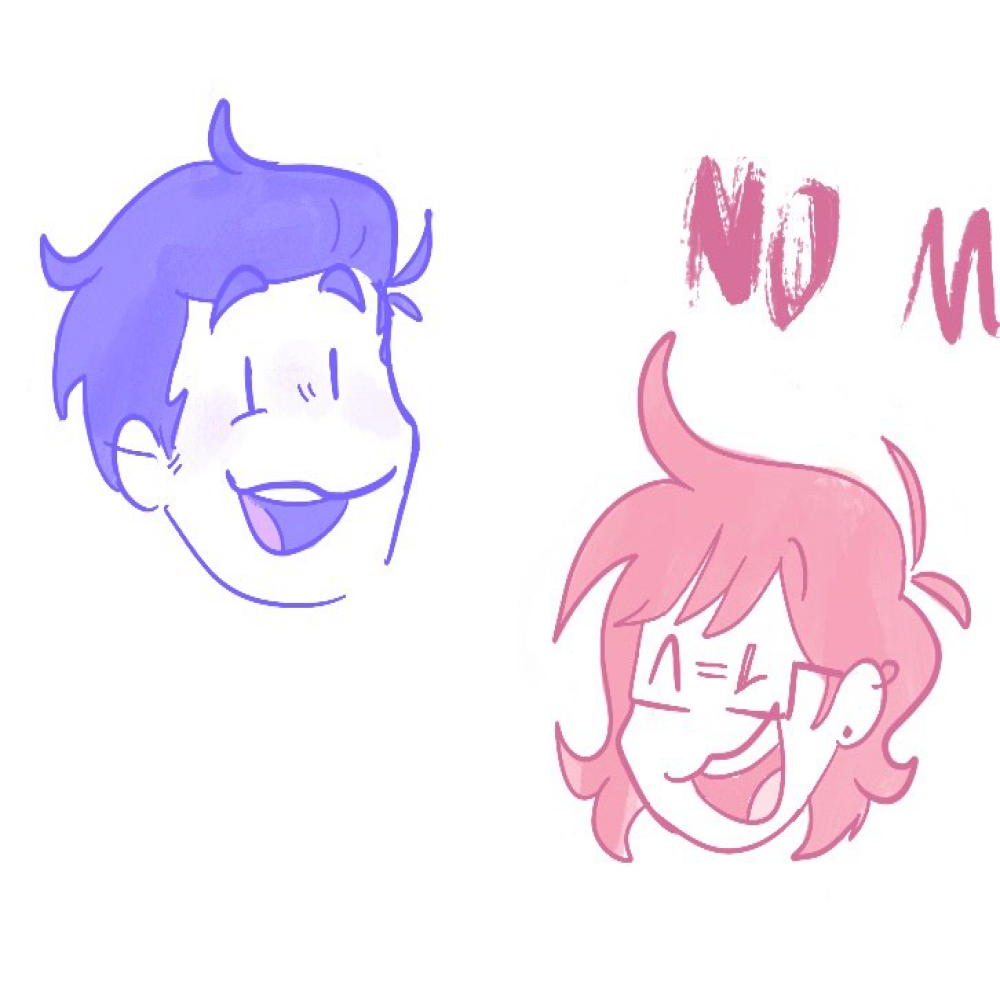
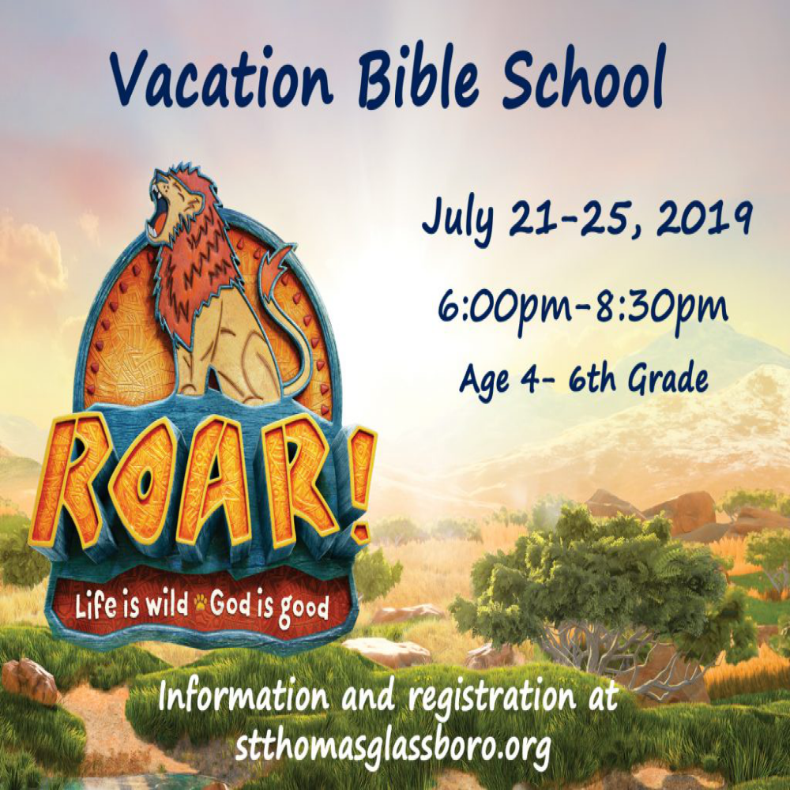

Elyssa A
I have analyzed the genomes of 3 different strains of Oryza Sativa Japonica rice’s genome and determined the differences in the genome between them. On top of this, I presented this information to the class, which aided in sequencing the genome of a specific recombinant inbred strain, or line, (RIL) at a particular locus. Additionally, I have pursued a multitude of creative writing projects during my time at UCR. I drew a digital art piece about the themes in two shows I watched in English 1B, which I presented in an art gallery at the end of the quarter. I have also written A-grade analysis essays about how childhood neglect is explored in one of my favorite shows, the importance of proper representation of depression and similar mental illnesses in the media, and how video games can help people with depression. I have also written extensively about my Filipino culture and how my cultural identity as a Filipino affected how I dealt with the Coronavirus pandemic. As part of that project, I interviewed someone who was Taiwanese and used that to write about how his culture affected how he dealt with the Coronavirus pandemic. I used this to compare and contrast our experiences and observe patterns in how Asian Americans dealt with the pandemic in general. I also wrote an essay ranking the significance of the reasons behind climate change. Finally, I have also written a book review on a book about the fight to improve the climate.
I decided to become a biology major because I’m passionate about ecology and preserving the balance between nature and humans, as we both affect each other in profound ways. I would like to work with a team of ecologists to survey how the biodiversity of California is being affected by increasing urbanization, a lot of which I have seen in Riverside myself. Firsthand, I remember when I was a freshman in a newly-built high school, there used to be a patch of marshland near the campus. I would often see beautiful Tricolored blackbirds sitting on the reeds that grew from the marsh. However, as the years went by, I noticed the water was starting to drain, and by my junior year, all the reeds were yellow and dead, with no blackbirds to be seen. I soon found out Tricolored Blackbirds are endangered, which gave me an intensified spark to want to protect the ecosystem balance. I want to work closely with the environment to protect and monitor species like it. As supplemental research, I would like to monitor how people feel disconnected from the environment and use that data to develop further incentives to increase everyday people’s environmental concerns and actions. Finally, I would like to build and support projects to increase ways for humans to live harmoniously and sustainably with the environment, like analyzing the effects of more wildlife crossings in California, and implementing biological solutions to chemical problems in aquatic ecosystems.
Academic-wise, I recently joined the Strategies for Ecology Education, Diversity, and Sustainability (SEEDS) student organization at UCR.
Experience
Teaching Assistant
• Ran sessions to help students learn how to code
• Reviewed and graded student coding projects
• Created educational content to help promote student education
• TA'd for over 400 students each academic quarter
Education
UC Riverside
Portfolio




 